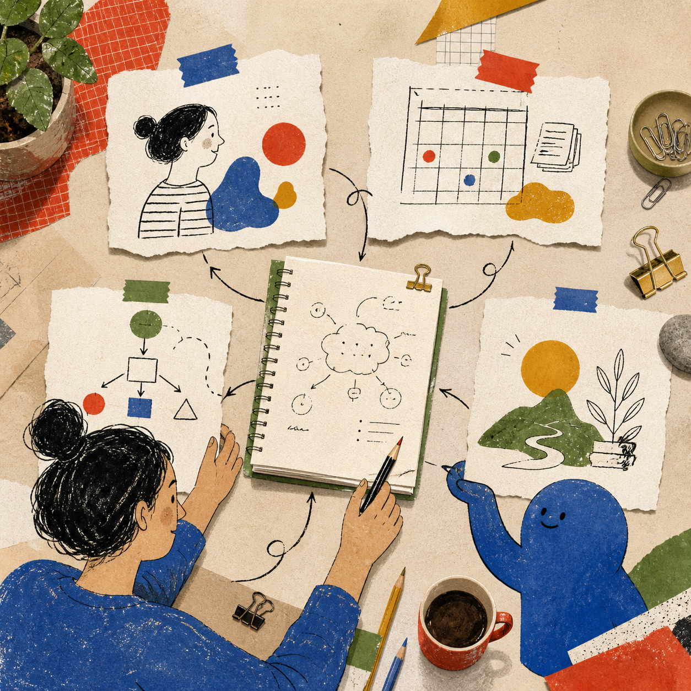

02 · 規劃自己的系統
規劃自己的系統，想清楚 AI 要怎麼幫忙
在請 AI 幫你做工具前，先想清楚四件事：誰要用、每天處理什麼、事情怎麼完成、最後想看到什麼。這四個答案會決定系統怎麼和 AI 合作。
實際案例
以一個個人工作系統為例
把一件反覆工作變成 AI 與系統都能照著做的流程
使用者每天處理一件反覆工作，從資料進入開始，經過 AI 整理、使用者確認、系統執行，最後留下結果供下一次調整
最後要看到
今日待完成腳本、已發布內容、數據變化、待追蹤事項與下一個選題方向

規劃自己的系統
把四個答案說到夠清楚
- 誰會使用，AI 什麼時候幫忙
說明誰會在什麼時間、用什麼方式使用系統，也說明什麼情況下要請 AI 幫忙
- 每天要處理什麼
把任務、文件、設備或其他要追蹤的資料寫成具體名詞
- 畫出 AI 與系統怎麼合作
指出資料從哪裡進來、AI 可以整理什麼、你在哪裡確認、系統怎麼完成
- 決定最後要留下什麼
說明 AI 與系統最後要留下什麼結果、提醒、狀態或下一步
開始前的檢查
系統要做什麼、AI 要幫什麼都還不清楚時，先不要急著做畫面
常見失敗
只說「幫我做一個很漂亮的 Dashboard」，卻沒有說明誰使用、每天處理什麼與結果如何回寫
四個答案確認後，才進入挑案例、開發系統、接上 AI 與開始使用的下一步
完成規劃後，先看一個工作案例